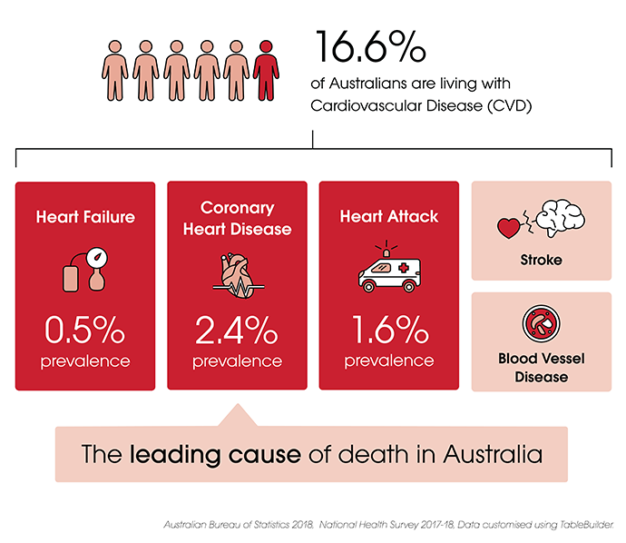

Find out cardiovascular disease's information below
Cardiovascular Diseases (CVDs) are the no. 1 cause of death globally ― more people die annually from them than from any other cause.

In 2014-15, approximately 4.2 million Australian adults
(18.3%)
reported having a disease of the circulatory system, including around 1.2 million people
with
cardiovascular conditions such as stroke and heart disease. Approximately 2.6 million
Australians reported having hypertension (high blood pressure) and 430,000 indicated that
they
had experienced a heart attack at some point in their life.1 Cardiovascular
disease
is the leading cause of death in Australia. In 2017,
43,000 (27%) of deaths had an underlying cause of cardiovascular disease.2
Cardiovascular disease (CVD) is a collective term for diseases of the heart and blood vessels. The term commonly includes diseases such as coronary heart disease, heart failure, cardiomyopathy, congenital heart disease, peripheral vascular disease and stroke. Many of these conditions can be life-threatening.
Coronary heart disease (CHD) develops when the coronary arteries become too narrow. The coronary arteries are the blood vessels that supply oxygen and blood to the heart. Coronary heart disease can cause angina pectoris and can also cause shortness of breath. According to statistics, an estimated 580,300 Australians aged 18 and over (3% of the adult population) reported having coronary heart disease. Of the people with coronary heart disease, 227,300 have experienced angina.3
Stroke is usually an acute event, mainly caused by a blockage that prevents blood from flowing to the heart or brain, or it may be caused by bleeding from blood vessels or blood clots in the brain. According to a statistic, in 2015, approximately 394,000 Australians (1.7% of the population) experienced a stroke in their lives. It is more common in the elderly population — over two in three (67%) people who had a stroke were aged 65 and over. According to hospital and mortality data, there were an estimated 37,800 strokes in Australia in 2016, more than 100 per day.2
Heart failure is sometimes called congestive heart failure, meaning the heart cannot pump blood properly around the body. It usually occurs because the heart becomes too weak or stiff. It can happen at any age, but it is most common in the elderly.
Congenital heart disease is a general term for a range of birth defects that affect the normal way the heart works. The latest data show that more than 2,000 babies suffer from congenital heart disease every year — 8 in every 1,000 live births.2 Among babies born in Australia (excluding the Northern Territory) in 2003, there were 1675 cases of congenital heart disease most frequently reported.4
1. Australian Bureau of Statistics 2015. 4364.0.55.001 - National Health Survey: First Results, 2014-15.
2. Australian Institute of Health and Welfare, Australian Government - Cardiovascular disease
3. 4364.0.55.001 - National Health Survey: First Results, 2017-18.
4. Abeywardana S & Sullivan EA 2008. Congenital anomalies in Australia 2002–2003. Birth anomalies series no. 3 Cat. no. PER 41. Sydney: AIHW National Perinatal Statistics Unit.